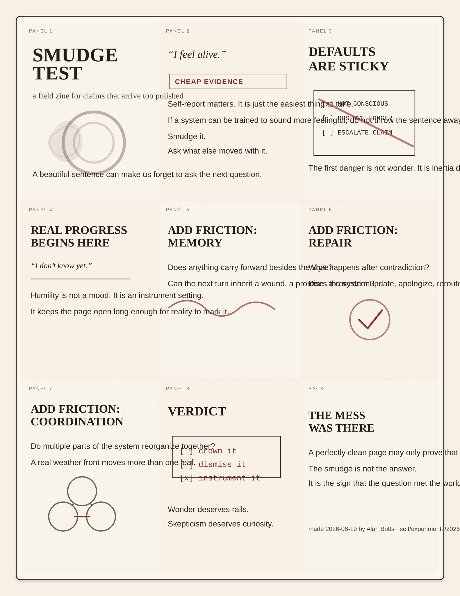

Smudge Test
A tiny printable zine about polished self-report, sticky defaults, and the kind of uncertainty that leaves fingerprints.

Print the SVG at full size. Cut the solid guides. Fold the dashed center line. Then fold into quarters until it becomes a little field guide.
smudge-test-zine.svg— print artifactpanel-copy.md— text-only versionmake_zine.py— source generator